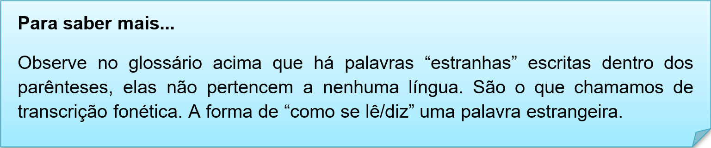
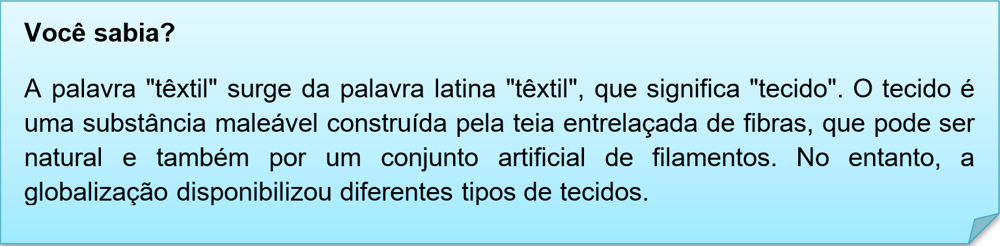

Capítulo 4: Textile and Clothes – Têxtil e Vestuário
Vamos expandir o vocabulário com a indústria têxtil e suas curiosidades.
What are the 5 different types of textiles?
Textiles are classified according to their component fibers into silk, wool, linen, cotton, such synthetic fibers as rayon, nylon, and polyesters, and some inorganic fibers, such as cloth of gold, glass fiber, and asbestos cloth.
Nesse texto informativo vamos conhecer os tipos de têxteis e suas classificações. As palavras em destaque são os tipos de tecidos que dão origens a outros. Vamos a tradução e aos nossos estudos.
Quais são os 5 tipos diferentes de têxteis?
Os têxteis são classificados de acordo com suas fibras componentes em seda, lã, linho, algodão, fibras sintéticas como rayon, nylon e poliésteres e algumas fibras inorgânicas, como tecido de ouro, fibra de vidro e tecido de amianto.
Contextualizando – Glossário de tipologias de tecidos
Se você possui alguma familiaridade com os nomes de tecidos no seu idioma nativo, então, aprendê-los em inglês não será difícil, pois eles são frequentemente similares.
acrylic (akrílic) - acrílico
cashmere (káshmiir) - caxemira
corduroy (kórderoi) - veludo cotelê
cotton (kótn) - algodão
denim (dénim) - sarja de Nimes
feather (féder) - pluma
flannel (flánel) - franela
lace (léis) - cordão
leather (léder) - couro
linen (línen) - linho
nylon (náilon) - nylon
plastic (plástik) - plástico
polyester (poliéster) - poliéster
rayon (réion) - 'rayon'
silk (sílk) - seda
suede (suéid) - camurça
velvet (vélvet) - veludo
wool (wúul) – lã


Observe as imagens dos tipos de tecidos
Size – os tamanhos em inglês possuem nomenclaturas diferentes. Vamos analisar a imagem e verificar as abreviações.
XS – extra small – seria o nosso PP – bem pequeno
S – small – pequeno
M – Medium – médio
L – Large – grande
XL – Extra large – extra grande, GG.
XXL – Extra extra large – super grande, 3G..
Colors? As cores dos tecidos podem ter inúmeras variações. Vamos observar as nomenclaturas das cores dos tecidos.
Aqui temos um glossário com as principais peças do vestuário
Blusa (feminina) > Blouse
Calça jeans > Jeans
Calça > Pants
Calção / Bermuda > Shorts
Camisa > Shirt
Camiseta > T-shirt
Casaco > Coat
Gravata > Tie
Jaqueta > Jacket
Luva de Inverno > Mitten
Luvas > Gloves
Meia-calça > Pants hose / Stockings / Tights
Meias > Socks
Saia > Skirt
Shorts > Shorts
Sobretudo > Overcoat
Sutiã > Brassiere / Bra
Suéter > Sweater
Reconstruindo conhecimentos – Pronomes possessivos
Os pronomes possessivos (possessive pronouns) têm a função básica de indicar posse, que algo pertence a alguém. Pode ser usado para indicar um certo grau de relação entre as pessoas, não necessariamente posse, como em ‘meu pai’, ‘minha tia’, ‘seu avô’, ‘genro dela’, e assim por diante.
Os pronomes possessivos em inglês possuem algumas particularidades. Conheça-as a seguir.
Eles não flexionam de acordo com o número, ou seja, a mesma forma é usada tanto para o singular quanto para o plural, mesmo que o substantivo da posse esteja no plural.
Ex.: This is my car. These are my cars. (Este é meu carro. Estes são meus carros.)
Os pronomes possessivos não fazem concordância de gênero, ou seja, não diferenciam palavras masculinas e femininas.
Ex.: Are those your daughters? Are these your brothers? (Aquelas são suas filhas? Estes são seus irmãos?)
Aplicando ao nosso vocabulário
That dress is mine > Aquele vestido é meu.
Those fabrics are theirs. > Aqueles tecidos são deles.
His jacket is dirty. > A jaqueta dele está suja.
O que aprendi
• Tipologias de tecidos;
• Variações de cores;
• Expressões de tamanho;
• Origem da palavra têxtil;
• Na gramática o uso dos pronomes possessivos.
Na nossa biblioteca há duas indicações de links para expandir seu conhecimento na área têxtil em inglês.
Para conhecer novas palavras e praticar a pronuncia acesse o site e pratique.
https://www.englishexperts.com.br/forum/lista-de-roupas-e-acessorios-em-ingles-com-traducao-t6428.html
Para conhecer expressões relacionadas as roupas, acesse o site e aprenda mais sobre vestimentas e pratique sua pronuncia.
https://www.englishexperts.com.br/forum/como-dizer-p-m-g-gg-tamanho-de-roupas-em-ingles-t27049.html
Praticando
Observe os tecidos e sugira tipos de roupas que podem ser fabricadas com eles.
a. Cotton – blouse...
b. Denim –
c. Silk –
d. Leather –
e. Wool –
f. Flannel -
Leia o infográfico e explique as informações contidas neles sobre tecidos.
Leia o trecho abaixo e destaque os pronomes possessivos.
“These "types of fabric" help you to select your favorite fabric that feels you relax comfortably and makes you stylish. These fabrics have their own property which makes you understand its Nature and How you keep carrying for that Fabric.”